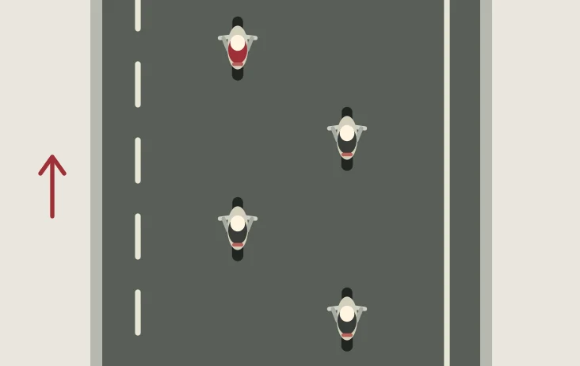
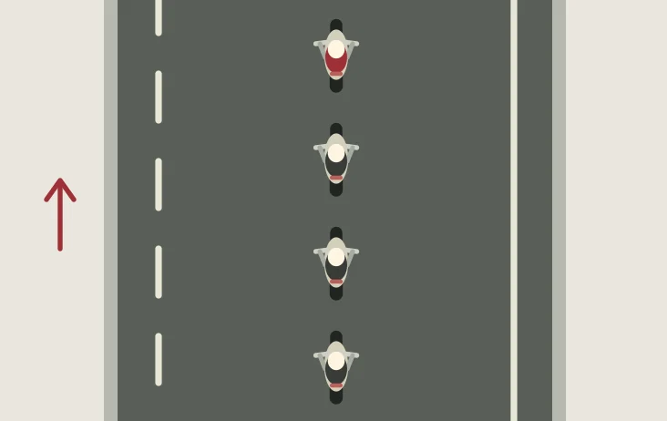

Журнал клуба
Как двигаться в колонне
Капитан успел на зелёный. Перед вами уже красный. Если ещё на стоянке все запомнили следующую точку сбора, спешить никому не придётся.
До старта
У «Черепах» маршрут и остановки планирует дорожный капитан. Перед выездом каждый должен знать хотя бы следующую остановку и место сбора на случай разрыва. Сохраните точку в телефоне, пока стоите. Заправку выбирайте с учётом мотоцикла с самым маленьким запасом хода.
Ведущий задаёт ровный темп, который доступен всей группе. Замыкающий знает маршрут, следит за хвостом и может связаться с ведущим. Того, кто впервые едет в колонне, удобно поставить сразу за капитаном. Если мотоциклов много, договоритесь о нескольких небольших группах со своими ведущими и замыкающими.
Шахматный строй и один ряд
Ширина полосы, обзор и состояние асфальта определяют, сколько места оставить каждому. Даже на прямой соседу нужно пространство сбоку, чтобы объехать яму.

Шахматный строй
На широкой сухой прямой ведущий занимает левую треть своей полосы, второй идёт позади в правой трети. Третий держится позади первого. Сохраняйте продольное смещение, чтобы рядом с вами оставалось свободное место.

Один ряд
Перед серией поворотов, на узкой дороге, при плохом покрытии или видимости заранее увеличьте дистанцию и выстройтесь по одному. Так каждый может выбрать свою траекторию в пределах полосы. То же удобно сделать перед въездом на скоростную дорогу и съездом с неё.
Направление движения показано стрелкой. Масштаб условный.
Как отмерить дистанцию
Выберите неподвижный ориентир, например дорожный столб. Когда ближайший мотоцикл впереди поравняется с ним, отсчитайте две секунды. Если вы прошли столб раньше, плавно увеличьте разрыв. Проверяйте и того, кто едет по диагонали.
Две секунды — нижний ориентир для сухой прямой при умеренной скорости. На высокой скорости, в дождь или на извилистой дороге оставляйте четыре секунды и больше по обстановке. Пункт 85 ПДД Беларуси требует такой дистанции, чтобы избежать столкновения, если впереди резко затормозят. Важен и запас места сбоку.
Если колонну разделил светофор
Успевшие проехать продолжают путь к оговорённому месту сбора. Если перед вами загорелся красный, остановитесь перед стоп-линией, где она есть. Дождитесь разрешающего сигнала и продолжайте в своём темпе. При обычном клубном выезде каждый соблюдает сигналы светофора и сам уступает дорогу там, где этого требуют ПДД.
Для встречи годится разрешённая стоянка, на которой поместится вся группа. Если вы пропустили поворот, остановитесь в подходящем месте и свяжитесь с замыкающим. Остальным проще подождать на стоянке, чем искать товарища по разным дорогам.
Манёвры и остановки
- Перестроение и обгон
- Каждый проверяет зеркала и слепую зону, включает свой указатель поворота и оценивает свободное место. Если впереди идущий успел обогнать, у следующего уже другие условия. Оставайтесь на своей полосе до собственного безопасного момента.
- Между вами вклинилась машина
- Плавно откройте промежуток и отсчитывайте дистанцию уже до автомобиля. Вернуться на своё место можно позже, когда это получится спокойно.
- У товарища поломка
- Замыкающий сообщает ведущему, как только может сделать это безопасно. Для помощи остановитесь в разрешённом месте вне потока. Остальные ждут там, где поместятся все мотоциклы. После остановки передайте координаты и договоритесь, кто вернётся с инструментом.